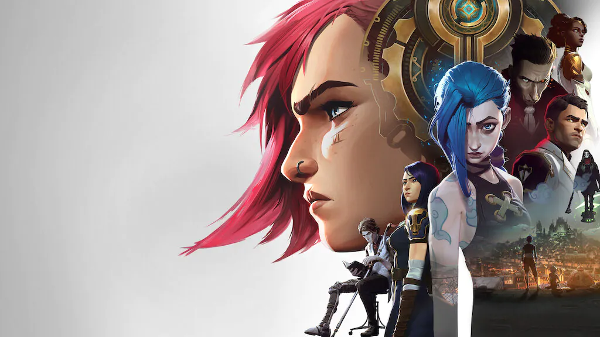

Desafie seus inimigos!
Se torne uma lenda!

Se torne uma lenda!
Quem somos

A Rito Gomes é uma empresa bra-chinesa, localizada no Norte do polo Norte em frente a casa do papai noel, muitas pessoas confundem-nos com uma empresa patife chamada Riot Games, contudo nós temos jogos de alta qualidade, com um serviço incrível ao cliente, totalmente personalizado, além de diversos produtos como roupas, bonés, pelucias, colecionavéis e etc dos nossos jogos.
Fomos presenteados com o prêmio de jogo do ano (goty) por 3 anos seguidos com nossos, vários usuários falam de como nossos jogos mudaram suas vidas, alguns chegaram ate a vender a própria casa ou roubar a aposentadoria da avó para continuar jogando e comprando nossos produtos.